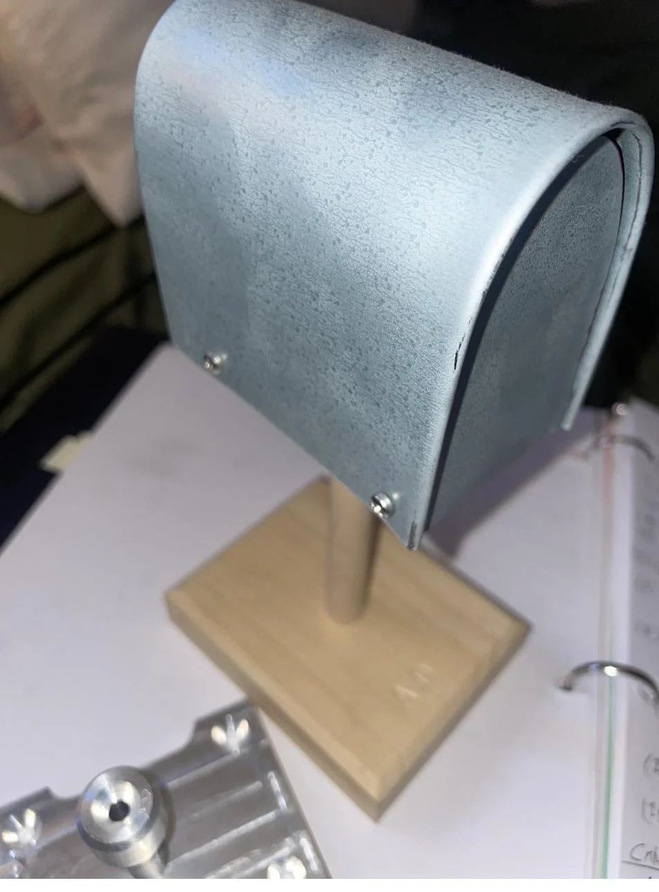

Sheet Metal · Fabrication · SJSU Machine Shop
Mailbox Fabrication
A working aluminum mailbox fabricated from flat sheet stock and paired with a wooden stand — an exercise in metal forming, fastening, and holding a finished part to ±1/32-inch tolerances.
Sheet MetalMetal FormingFabricationDimensional InspectionAluminumWoodworking

Key Specs
- Material: aluminum sheet + wooden stand
- Operations: cutting, bending, drilling, fastening
- Tolerance: held to ±1/32 in
- Assembly: screws for the metal · screws and wood glue for the stand
- Result: fully functional — door opens and closes cleanly
Overview
A working aluminum mailbox fabricated from flat sheet stock as a hands-on fabrication exercise. I cut, bent, and drilled the sheet into its final form, fastened it together, and built a separate wooden stand to mount it. The focus was on clean metal forming, solid fastening, and producing a finished, functional part held to tolerance.
Process
I laid out the aluminum sheet, then cut, bent, and drilled it into its mailbox form before fastening the pieces together. I built the wooden stand separately and assembled it with screws and wood glue. Throughout, I checked the part against its intended dimensions, holding tolerances to about ±1/32 inch. The finished mailbox works as intended — the door opens and closes cleanly.
What I learned
Sheet-metal work leaves little room for layout error — a misplaced bend or hole carries through every step that follows. Planning the cut, bend, and drill sequence and verifying dimensions before committing is what keeps the part from needing rework. Pairing the metal body with a wooden stand also meant getting two different materials and fastening methods to line up into one clean assembly.
Evidence plates